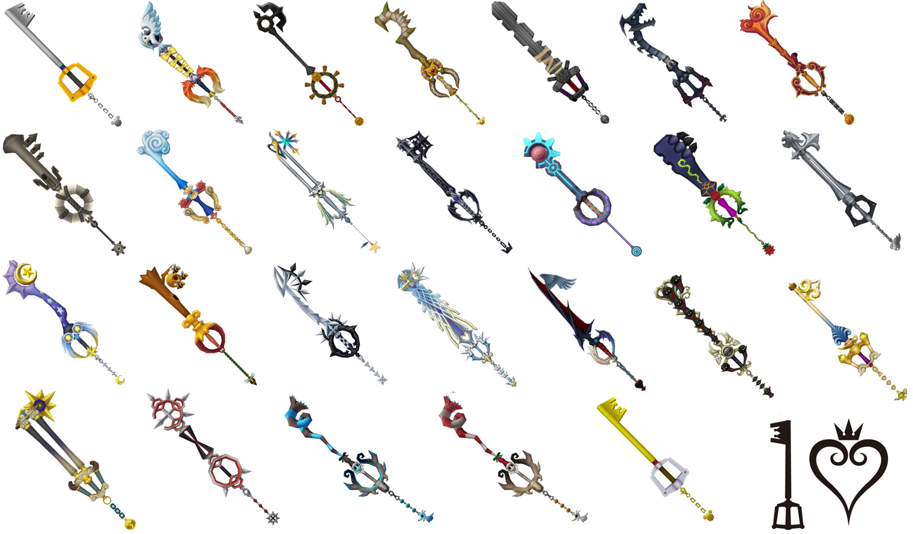

Keyblades

Keyblades
La Llave Espada (Keyblade en inglés, キーブレード, Kīburēdo en japonés), es una misteriosa arma y uno de los elementos más importantes de la saga Kingdom Hearts, siendo portada por la mayoría de sus protagonistas. La Llave Espada es una parte principal en la batalla entre la Luz y la Oscuridad. Hay muchos tipos diferentes, que difieren entre sí por la la forma, el tamaño, sus diferentes cualidades para la lucha y poderes, los cuales pueden variar dependiendo del llavero que se le haya asignado a la llave, y que se van consiguiendo a medida que se avanza en el juego. La Llave Espada más conocida y representativa es la Cadena del Reino, Llave Espada inicial de Sora y la que se porta por defecto en la mayoría de los juegos.
Según mencionan en Kingdom Hearts 3D: Dream Drop Distance, las Llaves espada se originaron intentando recrear la Llave espada χ, por lo tanto, son "copias" adaptadas a ella según su apariencia. Una leyenda mencionada en Kingdom Hearts afirma que el portador de la Llave Espada puede salvar al mundo, o traer el caos y la destrucción a los mundos. Mientras que estas leyendas pueden parecer se contradicen, se puede entender que el portador de la Llave Espada elige cómo utilizarla, ya sea para bien o para mal. La Llave Espada es conocida en todo el universo como un arma única y poderosa. Por ejemplo, en Atlántica, el Rey Tritón y Úrsula tenían conocimiento de la Llave Espada y sus poderes. El Rey Tritón no quería que Sora sellara la Cerradura porque pensaba que la Llave Espada sumiría a su mundo en el caos, mientras que Úrsula sabía que esta da la posibilidad al portador de viajar por los mundos.
Uno de los fragmentos de texto en el vídeo secreto de Kingdom Hearts II: "The Gathering", menciona una Guerra de las Llaves Espada. Cientos de Llaves Espada pueden verse incrustadas en la tierra durante este vídeo, así como en el extendido "Birth by Sleep" del final de Kingdom Hearts II Final Mix. Cabe señalar que ninguna de estas Llaves Espada, aparentemente abandonadas, tienen llaveros, a pesar de que la importancia de este detalle es actualmente desconocida como el origen de las Llaves Espada. Maestro Xehanort también declaró que las miles de Llaves Espada que quedan son las ruinas y antiguas armas de la Guerra de las Llaves Espada.